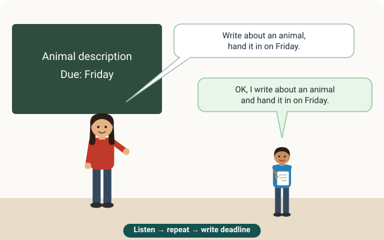
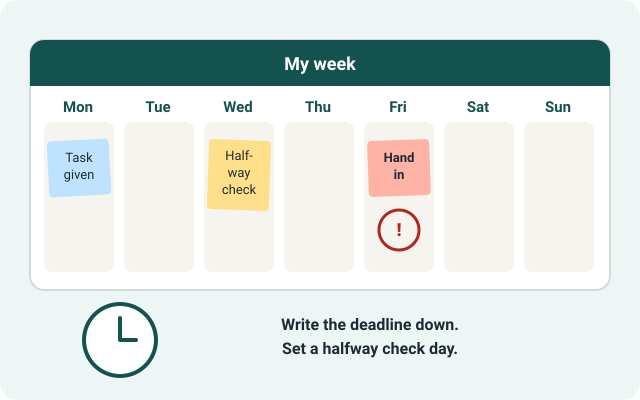
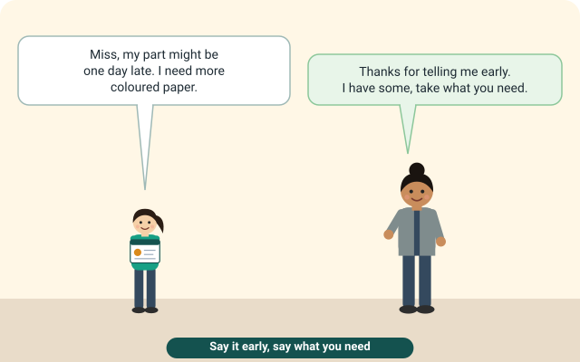

K5 · Planning and keeping work commitments › Level 1 Exploring
Taking on a task and keeping your promise
For the adult. This lesson teaches how to do it, not a moral lesson. Instead of saying "you must be responsible", practise each concrete step with the child.
- You need: the weekly calendar template or a sheet of paper with 7 columns, and sticky notes.
- Ages 9–11: the adult plays the person giving the task, and the child practises repeating it back out loud. Ages 11–15: the child makes their own weekly calendar.
- When the child warns you early, say thank you before asking why. They will dare to warn you early next time.
- Responsibility as a personal quality is covered on daynentang.com.
1. Objectives
- Take on a task and repeat it back: what to do, and when it is due.
- Say early when you might be late, and what you need.
2. Retrieval warm-up
- What are the 3 columns of a group Task board?
- Name 2 of the 4 things a good teammate does.
Answers
- Who – What – Done by when.
- Finishes their part; listens to others; shares things and information; asks for help when needed and helps when others need it.
Review: Finishing a task together.
3. Explanation
People at work always take on tasks and agree when they will be done. A tailor agrees a day to return the clothes. A mechanic agrees a time to collect the bike. Keeping these promises helps others trust you and feel confident working with you.
Part 1. Taking on a task properly. Many missed deadlines start with not hearing clearly. Use 3 steps:
Taking on a task in 3 steps
- Listen fullyDon't interrupt the person giving the task.
- Repeat backSay again: what to do, and when it is due.
- Write the deadlineWrite it on a calendar or in a notebook straight away.

Part 2. Keeping your promise. Don't wait until just before the deadline. Use 4 steps:
- Get everything you need before you start.
- Check halfway. Choose a day in the middle to ask yourself: how much have I done?
- If you are behind, say so early. Keep it short: which part may be late, and what you need.
- Hand it in on time, or by the new deadline you agreed.
Saying it early is different from saying sorry late. Saying it early means saying it while there is still time. Then others can still help you.
Asking for help at the right time is also a skill. Try first. If it still does not work, say clearly where you are stuck.
4. Workplace example
Hypothetical scenario. Maya (age 11) takes on the poster decorations for her group, for the class Job fair. The deadline is Friday.
Maya repeats it back to the teacher: "OK, I'll decorate the poster and hand it in on Friday." At home, she writes it on her calendar. She chooses Wednesday as her halfway check day.

On Wednesday, Maya finds she has run out of coloured paper. The shop is far away. She tells her teacher that same day:

The teacher has coloured paper in the classroom. Maya finishes and hands it in on Friday.
Why this works: Maya repeats it back to be sure she understood. Her halfway check day helps her spot the problem early. Her message is short, and says clearly what she needs.
5. Practice
Say these out loud to an adult. The adult plays the person giving the task.
- Repeat back: Mum says: "Water the plants before school. Remember the pot on the balcony too." How do you repeat it back?
- Say it early: You agreed to make 3 Job cards for your group, due Saturday. On Thursday you have made only 1. What do you tell your group?
- Plan it: Choose a task with a deadline this week. Write the task day, the halfway check day and the hand-in day.
Hint
Repeating back has 2 parts: what and when. Saying it early has 2 parts: which part is late and what you need.
Model answer
- "OK, I water the plants before school, and the pot on the balcony too."
- "I've only made 1 card. On Saturday I might be 1 card short. Could someone make 1 card for me?"
- For example: task given Monday, halfway check Wednesday, hand in Friday.
Keeping your promise in 4 steps
- Get readyEverything you need before you start.
- Check halfwayHow much have I done?
- Say it earlyWhich part is late, what I need.
- Hand in on timeOr by the new deadline you agreed.
6. Self-check
Choose an answer. Every option has an explanation.
Question 1. The teacher says: "Make one Job card, hand it in on Friday." Which way of repeating it back is best?
-
Not quite. The teacher does not know whether you understood the task and the deadline.
-
Correct. Correct. It repeats both what and when.
-
Not quite. This does not repeat the task or say the deadline.
Question 2. On Wednesday, you see your part might not be ready by Friday. When should you say so?
-
Correct. Correct. If you say it early, others still have time to help.
-
Not quite. By then it is too late for the group or the teacher to help.
-
Not quite. Staying up late is bad for your health, and you may still not finish.
Question 3. Which early warning is clearest?
-
Not quite. It does not say which part is late or what you need.
-
Correct. Correct. It says clearly which part is late and what you need.
-
Not quite. The listener does not know how to help you.
Question 4. Before starting a task, what should you do to keep your promise?
-
Correct. Correct. Running out of things halfway is a common reason for delay.
-
Not quite. Just before the deadline, there is no time left to find things.
-
Not quite. Ask before using other people's things.
Question 5. Review of Lesson 4. What are the 3 columns of a group Task board?
-
Correct. Correct. These 3 columns tell everyone their part and their deadline.
-
Not quite. This is personal information, not tasks.
-
Not quite. These are parts of a poster, not a task board.
7. Reflection
The adult asks, and you answer out loud. The site saves nothing.
- The last time you were late, when did you first notice you were behind? What if you had said so earlier?
- Which task do you forget most often? Where will you write it down?
8. Real-world application
Over the next 7 days, take on one household task with a deadline. Repeat it back when you take it on. Write it on your calendar. On your halfway day, check yourself and tell an adult.
Connecting ideas. This lesson continues from the "Done by when" column in Lesson 4. The "repeat back" step is the listening skill from Lesson 2. In Lesson 6, you agree an interview time and keep to it.
To learn later, when you are older: Take instructions and confirm them and Track tasks and flag delays early (groups N2, N3).
9. Metadata
| skill | K5 · Planning and keeping work commitments |
|---|---|
| level | Level 1 · Exploring |
| group | N1 |
| framework_map | CSfW: 3a Plan and organise; 2a Communicate for work; SkillsFuture CCS: Self Management; NACE: Professionalism; LifeComp: S2 Communication (reference only) |
| original | Vietnamese version |
| updated | 2026-11-14 |
Finish the lesson
Mark it as done and the site suggests reviews after 1, 3 and 7 days. The data stays on your device only.
Suggested reviews: